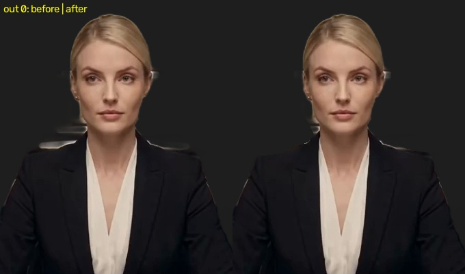
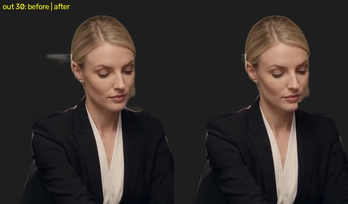

Vänster: före. Höger: efter. Lampstrecket bakom håret och tydliga ljusfläckar ovanför axlarna har tagits bort ur friläggningen. Ansiktets originalbild är bevarad.


40 inledande bildrutor granskade. Små blandade kanter vid hår, öron och kläder är bevarade. Detta löser inte hackandet, den saknade naturliga återgången eller utdelningen till alla sju platser.